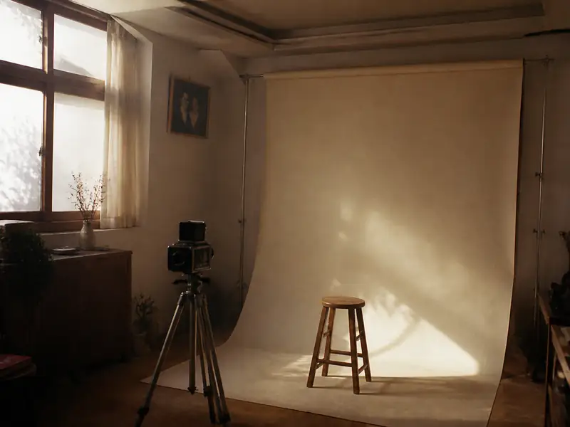
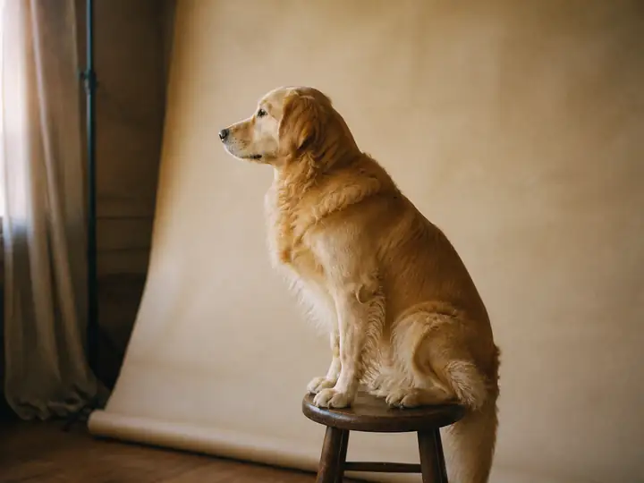
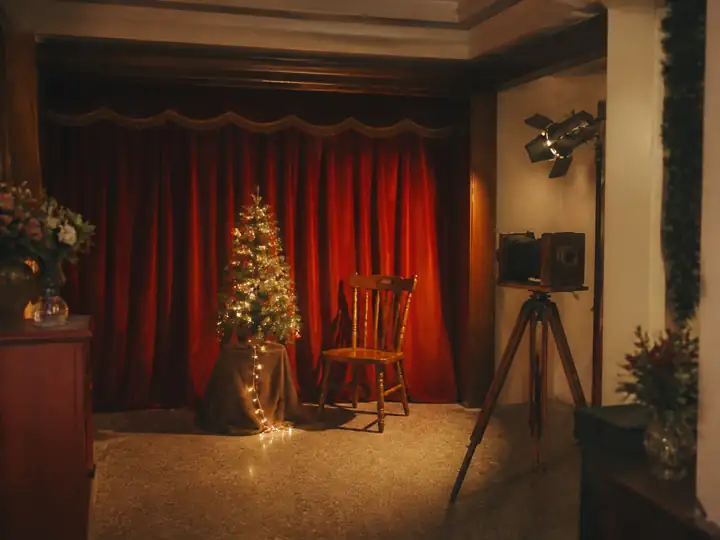
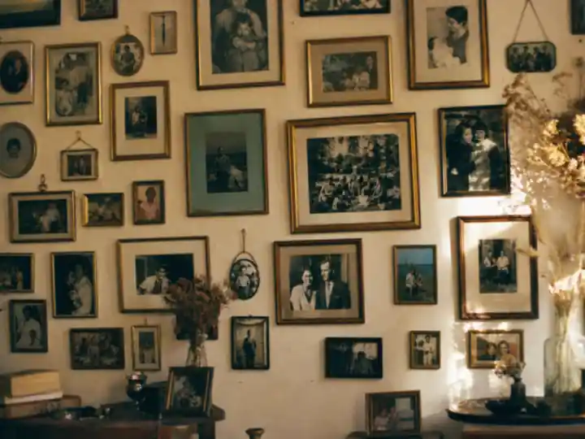
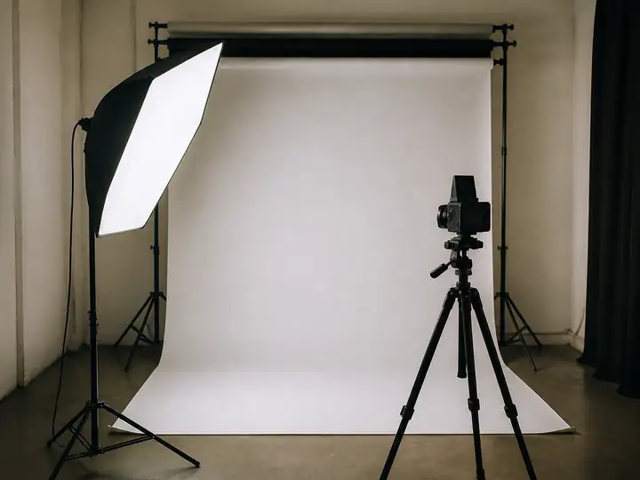
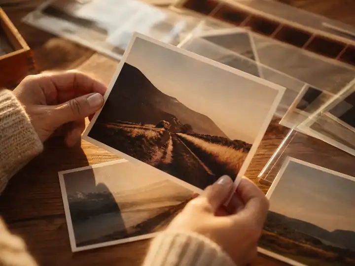

증명사진
여권 · 운전면허 · 주민등록 · 비자 · 각종 자격증. 규격에 맞춰 배경과 구도를 잡고, 원본 보정 후 인화까지.
Portrait studio — Okjeong, Yangju
증명사진 한 장부터 가족사진, 반려동물, 프로필까지. 사진일기 옥정점은 옥정동 중심상가 2층에서 문을 여는 작은 사진관입니다. 잘 나온 사진 한 장은 오래 남으니까, 조명과 표정을 서두르지 않고 맞춥니다.

01 — 기록
사진일기는 “오늘을 기록하는 공간”이라는 문장을 쓰는 사진관입니다. 성수·의정부·양주 세 곳에서 운영하고, 옥정점은 그중 양주에 있는 지점입니다.
증명사진을 찍으러 오셨다가 가족사진을 예약하시는 분이 많습니다. 그래서 옥정점은 한 번 온 김에 여러 컷을 남길 수 있는 구조로 운영합니다. 배경지와 조명을 바꿔 가며 증명용 한 컷, 프로필 한 컷, 아이와 함께 한 컷을 이어서 찍을 수 있습니다.
촬영은 예약 후 방문하는 방식으로 진행합니다. 표정이 어색하거나 머리카락이 흐트러졌으면 다시 찍습니다. 인화와 파일은 촬영 후 안내드리는 방식으로 받으실 수 있습니다.
가격과 촬영 소요 시간은 촬영 종류·인원·지점에 따라 다릅니다. 이 페이지에는 확인되지 않은 금액을 적지 않았고, 전화로 바로 안내드립니다.
02 — 촬영
필요한 사진을 고르시면, 준비할 것과 걸리는 시간을 전화로 안내해 드립니다.
여권 · 운전면허 · 주민등록 · 비자 · 각종 자격증. 규격에 맞춰 배경과 구도를 잡고, 원본 보정 후 인화까지.
이력서·SNS·회사 소개에 쓸 사진. 정면 한 컷에 표정이 다른 컷을 몇 장 더 남기는 방식으로 촬영합니다.
가족사진과 백일·돌, 리마인드 촬영. 아이가 낯을 가려도 쉬는 시간을 두고 찍습니다. 12월 시즌 컨셉 촬영도 준비 중입니다.
강아지·고양이와 함께 남기는 사진. 보호자와 같은 프레임에 들어오는 컷도 함께 찍습니다.
촬영 종류별 가격표와 소요 시간은 지점마다 조금씩 다릅니다. 옥정점 기준 금액은 전화(010-2928-4245)로 문의하시면 가장 정확합니다.
03 — 지점
브랜드 안내는 인스타그램에서, 예약과 촬영 문의는 지점별 전화·톡톡으로 받습니다. 이 페이지는 양주 옥정점 안내입니다.
SEOUL
서울 성동구 · 성수
인스타그램에서 지점 안내 보기UIJEONGBU
경기 의정부 · 민락
인스타그램에서 지점 안내 보기YANGJU · THIS PAGE
경기 양주시 옥정동로7길 91
케이비타워 2층 202호
지점 이름과 운영 정보는 인스타그램 소개글과 카카오맵 기준으로 정리했습니다. 성수·의정부 지점의 상세 주소와 시간은 각 지점에 확인해 주세요.
04 — 콘택트시트





안내 위 이미지는 인스타그램 피드(@sajindiary_)의 촬영 소재와 분위기를 참고해 만든 예시 이미지입니다. 실제 매장 사진이 아니며, 제작 시 매장 사진으로 교체됩니다.
05 — 예약
인스타그램 소개글에도 적혀 있듯 DM 답변이 늦을 수 있습니다. 촬영 일정은 전화나 톡톡으로 문의하시면 바로 확인됩니다.
증명 · 프로필 · 가족 · 반려동물 중 무엇인지, 인원이 몇 명인지 알려주세요.
가능한 날짜와 시간, 준비할 것, 가격을 한 번에 안내드립니다.
옥정동로7길 91 케이비타워 2층 202호. 촬영 후 보정본을 함께 확인합니다.
06 — 오시는 길